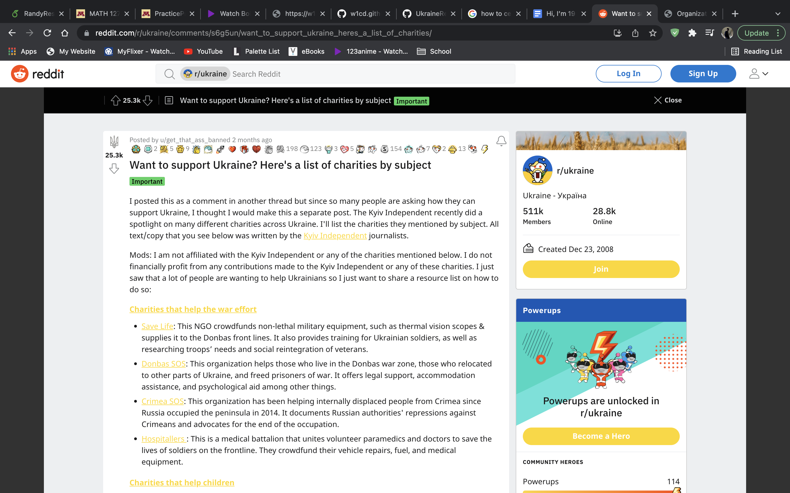

Small description or slogan of the company Small description or slogan of the company Small description or slogan of the company Small description or slogan of the company Small description or slogan of the company Small description or slogan of the company.
Hi, I’m 19 and I just got let off school for spring break. I haven’t seen a lot of sharing/stories* for the war in Ukraine and it’s kind of disappointing, even though I don’t share anything either so ig I’m hypocritical on that.
I thought I’d make a list of sources or anything to help you stay informed & to help support the people in Ukraine. You don’t have to donate or anything, but I think staying informed is good… And then who knows, it might lead you to want to donate which is also good
There’s a variety of options and specific fields in which you can help donate, for example, shelters, towards families(renting out airbnbs is one I heard), weaponry, etc… Personally, I don’t think I’m going to donate towards weaponry but it’s your choice on whatever you want to donate to.
I found this list off reddit and this is just half of what they provided. If you want to learn more about it, download reddit on your phone or just use your computer and search up “reddit” on google or whatever search bar you use, then on reddit’s search bar -> “Ukraine” -> in communities tab, click on the first one listed.
OR if you’re really considering donating, I’ll link it straight for you… https://www.reddit.com/r/ukraine/comments/s6g5un/want_to_support_ukraine_heres_a_list_of_charities/ or if just want to explore around the community and see live reports then that’s fine also. Though I’m not exactly sure about the credibility of everything and you would need to do your own research on posts & charities. <- or just scroll through the comments and see what they say.
Finally, youtube is a good way to stay informed if you don’t like reading that much. Though, if you are on your phone, it might be hard to actually keep up with the news on Ukraine because there’s no list of news/trending tab on your home screen. You would need to click on the actual news tab to actually get the news, and that makes it hard to stay informed mindlessly. If you were on your desktop/computer on the other hand, the videos and news would be on your homepage. And that makes it easy to stay informed, m indlessly/without having to really do much clicking.
stories*- On Insta is what I’m referring to
**UPDATE, PEOPLE IN RUSSIA ARE PROTESTING, and there was a video of a couple of people resisting cops!** 7:07pm March 6 2022